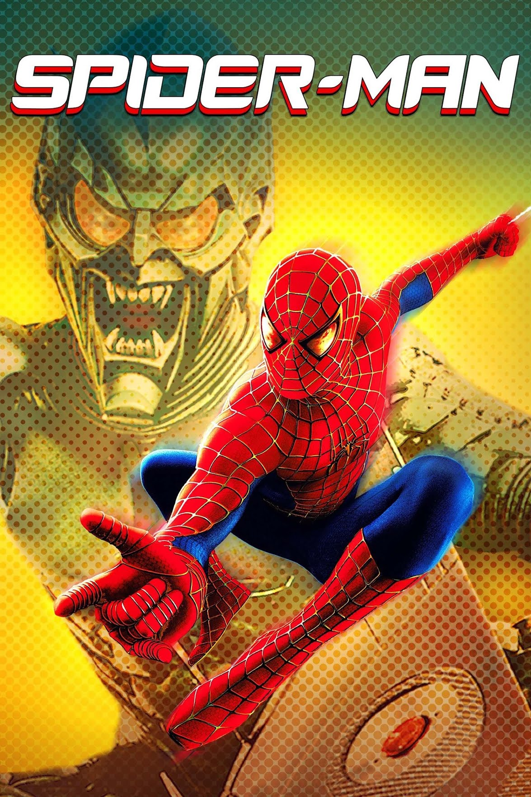

Spider-Man
Spider-Man (conocida en Hispanoamérica como El Hombre Araña) es una película de superhéroes estadounidense de 2002 basada en el personaje del mismo nombre de Marvel Comics, dirigida por Sam Raimi a partir de un guion de David Koepp. Es la primera entrega de la trilogía de Spider-Man de Raimi y está protagonizada por Tobey Maguire como el personaje principal, junto a Willem Dafoe, Kirsten Dunst, James Franco, Cliff Robertson y Rosemary Harris. La cinta narra la historia del origen de Spider-Man y su carrera temprana de superhéroe. Después de ser mordido por una araña alterada genéticamente, el adolescente marginado Peter Parker desarrolla habilidades sobrehumanas similares a las de una araña y adopta una identidad de superhéroe enmascarado para luchar contra el crimen y la injusticia en la ciudad de Nueva York, enfrentándose al siniestro Duende Verde (Dafoe) en el proceso.
El desarrollo de una película live-action de Spider-Man comenzó a mediados de la década de 1980. Los cineastas Tobe Hooper, Joseph Zito y James Cameron se unieron para dirigir la película en un momento dado. Sin embargo, el proyecto languidecería en el infierno del desarrollo debido a problemas financieros y de licencias. Después de que el progreso de la película se estancó durante casi 25 años, Columbia Pictures obtuvo la licencia para su lanzamiento mundial en 1999 después de que adquirió opciones de Metro-Goldwyn-Mayer en todos los guiones anteriores desarrollados por Cannon Films, Carolco y New Cannon. Ejerciendo su opción en solo dos elementos de la adquisición de múltiples guiones (un guion diferente fue escrito por James Cameron, Ted Newsom, John Brancato, Barney Cohen y Joseph Goldman), Sony contrató a Koepp para crear un guion funcional (acreditado como el de Cameron), y Koepp recibió el crédito exclusivo en la facturación final. Se consideró a los directores Roland Emmerich, Ang Lee, Chris Columbus, Jan de Bont, M. Night Shyamalan, Michael Bay, Ridley Scott y David Fincher para dirigir el proyecto antes de que Raimi fuera contratado como director en 2000. El guion de Koepp fue reescrito por Scott Rosenberg durante la preproducción y recibió un pulido de diálogo de Alvin Sargent durante la producción. El rodaje tuvo lugar en Los Ángeles y la ciudad de Nueva York del 8 de enero al 30 de junio de 2001. Sony Pictures Imageworks se encargó de los efectos visuales de la película.
Spider-Man se estrenó en el Mann Village Theatre el 29 de abril de 2002 y se estrenó en los Estados Unidos el 3 de mayo. La película recibió críticas positivas del público y los críticos que elogiaron la dirección, la historia, las actuaciones, los efectos visuales y la acción de Raimi, secuencias y la partitura musical. Es la primera película en alcanzar los $100 millones en un solo fin de semana, así como la película basada en un cómic más exitosa en ese momento. Con una recaudación de taquilla de más de $821.7 millones en todo el mundo, fue la tercera película más taquillera de 2002, unas las películas de superhéroes más taquilleras y la sexta película más taquillera en general en el momento de su estreno. A Spider-Man se le atribuye la redefinición del género moderno de superhéroes, así como el éxito de taquilla del verano. Su éxito llevó a Spider-Man 2 y Spider-Man 3 en 2004 y 2007, respectivamente.
ARGUMENTO
En un viaje escolar, Peter Parker, estudiante de último año de secundaria, visita un laboratorio de genética de la Universidad de Columbia con su amigo Harry Osborn y su enamorada Mary Jane Watson. Ahí, una «súper araña» modificada genéticamente se escapa de su jaula de contención, lo muerde y él se enferma al regresar a casa. Mientras tanto, Norman Osborn (el padre de Harry), científico, fundador y propietario de Oscorp, intenta conseguir un importante contrato militar y experimenta consigo mismo con un potenciador químico inestable que mejora el rendimiento muscular, pero se vuelve bipolar y desprovisto de cordura, lo que termina matando al Dr. Mendel Stromm, su compañero y asistente.
Al día siguiente, Peter descubre que ya no es miope y descubre que ha desarrollado habilidades similares a las de una araña: puede lanzar telarañas de sus muñecas y tiene reflejos acelearados, velocidad, fuerza sobrehumana, capacidad de adherirse a las superficies para treparse y un «sentido arácnido», una mayor capacidad para sentir el peligro que lo acecha. Haciendo caso omiso del consejo de su Tío Ben de que «Un gran poder conlleva una gran responsabilidad», Peter considera comprar un automóvil para impresionar a Mary Jane. Entra en un evento clandestino de lucha libre para ganar el dinero que necesita, donde se anuncia que se le pagara $3000 dólares al que pudiera soportar tres minutos en el ring y aprovechando sus habilidades Peter consigue ganar su combate, pero poco después el promotor termina entregándole solo $100 dólares de ganancias en lugar de los $3000 dólares anunciados, ya que según él, Peter derrotó a su oponente en dos minutos en lugar de tres minutos del anuncio. Sin embargo, Peter le insiste al promotor que necesita dicho dinero, pero este en un tono grosero, se limita en responderle diciendo: "¡Tus necesidades no son problema mío!". Justo cuando Peter sale indignado de la habitación con los $100 en ganancia que obtuvo, súbitamente, un ladrón entra en la oficina del promotor y a punta de pistola, le roba todo el dinero a este último. Al observar la situación, Peter deja que el ladrón pueda escapar en el ascensor, donde momentos después un guardia de seguridad que se encontraba en el lugar lo reprende por haberlo dejado huir. Por otro lado y realmente preocupado por lo sucedido, el promotor le advierte a Peter que este pudo haber atrapado al ladrón y ahora se escaparía con todo su dinero, pero Peter en su lugar se limita a darle una lección, devolviéndole el mismo argumento que le había dicho previamente: "Sus necesidades no son problema mío".
Momentos después, descubre que Ben fue asesinado y que robaron su auto. Peter lo persigue y se enfrenta hacia él, solo para darse cuenta de que era el mismo ladrón que dejó escapar previamente en el edificio de lucha libre. Mientras el propio Peter lo reconoce y queda impactado por la revelación, rápidamente el ladrón intenta matarlo a punta de pistola, pero Peter lo desarma, rompiéndole la muñeca y este ladrón completamente asustado y con dolor, empieza a caminar hacia atrás, hasta este se tropieza accidentalmente con una tubería y termina cayendo por la ventana del segundo piso y muera instantáneamente con la caída. Mientras tanto, un Norman enloquecido interrumpe un experimento militar en un campo de pruebas del rival corporativo de Oscorp, Quest Aerospace, y termina matando a varias personas.
Al graduarse, Peter comienza a usar sus habilidades para luchar contra la injusticia, vistiendo un traje de spandex y la personalidad enmascarada de Spider-Man. Por otro lado, J. Jonah Jameson, el editor del periódico Daily Bugle, contrata a Peter como fotógrafo independiente, ya que es la única persona que proporciona imágenes claras de Spider-Man. Al descubrir que la junta directiva de Oscorp planea despedirlo para vender los derechos de la empresa a Quest, Norman los asesina brutalmente en el Festival de la Unión. De pronto, Peter se enfrenta a Norman durante el atentado y finalmente, le destroza los sistemas de vuelo del planeador para obligarlo a retirarse. En el despacho del Daily Bugle, Jameson empieza a llamar al misterioso asesino el «Duende Verde».
Cuando Peter sale de manera fastidiosa por los comentarios de Jameson sobre el elegir el nombre a los villanos, Norman (como Duende Verde) irrumpe en el acto y presiona a Jameson para que revele la verdadera identidad de Spider-Man. Peter aparece en la escena para poder distraerlo y Jameson les reclama a Norman y Peter por ser un grupo de villanos, no sin antes ser silenciado por éste. Norman lo pone a dormir con el humo del planeador y lo lleva a un edificio remoto dejándolo paralizado y Norman le ofrece a Peter un lugar a su lado, pero él se niega. Norman se marcha, no sin antes hacerlo poner a cuestionar sobre los actos de los héroes cuando la humanidad lo rechaza por volverse una amenaza. En un edificio de apartamentos incendiado, Peter y Norman se reencuentran y empiezan a luchar, pero Peter termina siendo herido en el proceso y logra escapar de la escena. En la cena de Acción de Gracias, la Tía May invita a Mary Jane, Harry y Norman, pero durante la cena, Norman ve la herida y se da cuenta de la verdadera identidad de Peter. Pensando que la única forma de derrotar a Peter es atacar a aquellos que son especiales para él, Norman (como Duende Verde por segunda vez) ataca a May y la obliga a ser hospitalizada
En el hospital, Mary Jane le revela a Peter que había estado enamorada de Spider-Man (que este lo rescató numerosas veces seguidas) y le pregunta a Peter si estuvo hablando con él sobre ella y Peter le reveló que cuando habló con Spider-Man, le dijo a este último que las debilidades y los sentimientos del amor no son lo mismo. Harry, que está saliendo con Mary Jane, la ve sosteniendo la mano de Peter y asume que siente algo por él. Devastado y triste por este suceso, Harry le dice a su padre que Peter ama a Mary Jane desde la infancia, revelando sin saberlo la mayor debilidad de Spider-Man. En la siguiente noche, Norman (como Duende Verde por tercera vez) toma como rehenes a Mary Jane y un vagón de tranvía de Roosevelt Island lleno de niños junto al puente de Queensboro y obliga a Peter a elegir a quién quiere salvar y los deja a ambos caer en un retorcido experimento social. Rápidamente, Peter salva tanto a Mary Jane como el tranvía, pero en eso, Norman intenta hacer que el héroe los deje caer y comienza a golpearlo una y otra vez, pero justo cuando esta a punto de empalarlo con las cuchillas de su planeador, un grupo de personas que están en el puente cercano comienzan a arrojarle diferentes objetos a Norman para distraerlo y donde además se ponen a favor de Spider-Man, mientras que este último consigue poner a salvo a Mary Jane y el tranvía en una barcaza que se encontraba en las cercanías.
Al no quedar conforme con esto, Norman sujeta a Peter con un cable y lo arroja hasta un edificio abandonado cercano, donde lo golpea brutalmente hasta dejarlo completamente débil. Cuando Norman se jacta de cómo matará a Mary Jane, un enfurecido Peter consigue vencer y dominar a Norman, pero justo en ese momento, Norman se quita su casco y le revela a Peter su verdadera identidad y pide perdón por todo lo que ha hecho como el Duende Verde, pero mientras habla con Peter y sin que este lo note, sutilmente prepara su planeador para empalarlo por la espalda. Sin embargo y advertido por su sentido arácnido, Peter esquiva el mortal ataque y el planeador termina empalando fatalmente a Norman en su estómago. Moribundo y en medio de su agonía, Norman le pide a Peter que no le revele a Harry su identidad como el Duende Verde y finalmente muere. Poco tiempo después, Peter lleva el cuerpo sin vida de Norman a la casa de los Osborn, pero Harry llega al mismo tiempo y enfurecido tras asumir que este mató a su padre, le apunta con un arma para liquidar a Peter, pero este rápidamente se escapa de la escena.
En el funeral de Norman, mientras Peter consuela a Harry sobre perder a su padre, este último jura vengarse de Spider-Man, a quien considera el mayor responsable de la muerte de su padre. Momentos después, mientras mira la tumba de su difunto tío, Mary Jane le ofrece sus condolencias a Peter y le confiesa que lo ama, pero este, sin embargo, siente que debe protegerla de la atención no deseada de sus enemigos, por lo que oculta sus verdaderos sentimientos y le dice a Mary Jane que solo pueden ser amigos. Cuando Peter se va del lugar, recuerda las palabras de Ben y acepta su nueva responsabilidad como Spider-Man.
REPARTO
- Tobey Maguire como Peter Parker/Spider-Man
- Willem Dafoe como Norman Osborn/Duende Verde
- Kirsten Dunst como Mary Jane Watson
- James Franco como Harry Osborn
- Cliff Robertson como Ben Parker
- Rosemary Harris como May Parker:La esposa de Ben Parker y la tía de Peter.
- J. K. Simmons interpreta a J. Jonah Jameson
IR ARRIBA
Spider-Man 2
Spider-Man 2 (conocida como El Hombre Araña 2 en Hispanoamérica) es una película de superhéroes estadounidense de 2004 dirigida por Sam Raimi y escrita por Alvin Sargent a partir de una historia de Alfred Gough, Miles Millar y Michael Chabon. Basada en el personaje ficticio de Marvel Comics del mismo nombre, es la segunda entrega de la trilogía Spider-Man y una secuela de la película Spider-Man de 2002, protagonizada por Tobey Maguire junto a Kirsten Dunst, James Franco, Alfred Molina, Rosemary Harris y Donna Murphy.
Ambientada dos años después de los eventos de Spider-Man, la película encuentra a Peter Parker luchando por manejar tanto su vida personal como sus deberes como Spider-Man, lo que afecta su vida civil dramáticamente. Mientras tanto, el Doctor Otto Octavius se convierte en un villano diabólico después de que un experimento fallido mata a su esposa y lo deja neurológicamente fusionado a tentáculos mecánicos. Spider-Man debe evitar que recree con éxito el peligroso experimento, mientras lidia con un deseo subconsciente de dejar de ser superhéroe que lo está despojando de sus poderes. La inspiración de Raimi para la película provino del debut en el cómic de Doctor Octopus en 1964, el arco de la historia de 1966 If This Be My Destiny...! y el arco de la historia de 1967 Spider-Man No More!. La fotografía principal comenzó en abril de 2003 en la ciudad de Nueva York y también tuvo lugar en Los Ángeles.
Spider-Man 2 se estrenó tanto en cines convencionales como IMAX el 30 de junio de 2004, con gran éxito de crítica y recaudó $789 millones en todo el mundo, convirtiéndose en la tercera película más taquillera del año. Ganó el Premio de la Academia a los Mejores Efectos Visuales y también fue nominada a Mejor Mezcla de Sonido y Mejor Edición de Sonido; también recibió cinco premios en los Premios Saturn, incluyendo Mejor Película de Fantasía y Mejor Director para Raimi. Es considerada como una de las mejores y más influyentes películas de superhéroes de todos los tiempos.Su éxito llevó a Spider-Man 3 (2007).
ARGUMENTO
Dos años después de la muerte de Norman Osborn, Peter Parker, también conocido como el superhéroe Spider-Man, se distancia tanto de su interés amoroso Mary Jane Watson como de su mejor amigo Harry Osborn; también descubre que su tía May se enfrenta al desalojo. Se encuentra sufriendo pérdidas temporales pero recurrentes de sus poderes, a menudo en situaciones que ponen en peligro su vida.
Harry, que ahora es jefe de la división de investigación genética y científica de Oscorp, patrocina un proyecto de energía de fusión del científico nuclear Otto Octavius, quien se hace amigo y mentor de Peter. Mientras maneja materiales peligrosos, Octavius usa un arnés de poderosos brazos robóticos con tentáculos con inteligencia artificial. Durante una demostración pública a la que asisten Peter y Harry, un pico de energía hace que el reactor de fusión se desestabilice. Octavius se niega a apagar el reactor, lo que se vuelve crítico: mata a su esposa y quema el chip inhibidor que bloquea los brazos de su sistema nervioso. Peter, como Spider-Man, cierra el experimento, destruyéndolo en el proceso.
En un hospital, los médicos se preparan para quitar quirúrgicamente el arnés de Octavius. Sin el chip inhibidor, los brazos ahora sensibles se defienden matando a los médicos. Al recuperar la conciencia y ver la masacre, Octavius escapa y se refugia en un puerto. Cada vez más influenciado por la IA de los brazos, decide volver a intentar su experimento. Roba un banco para financiar un segundo experimento. Peter y May casualmente están allí, y Octavius toma a May como rehén. Peter la rescata, pero Octavius huye con el dinero robado. El Daily Bugle posteriormente apoda al científico Doctor Octopus.
Mary Jane se compromete con el astronauta John Jameson, hijo del editor de Bugle, J. Jonah Jameson. Peter sufre un colapso emocional por su incapacidad para equilibrar su vida y pierde sus poderes. Deja de ser Spider-Man, vuelve a su vida normal e intenta reconciliarse con Mary Jane, pero con poco éxito. Un basurero le lleva el disfraz de Peter a Jameson, quien se atribuye el mérito de haber llevado a Spider-Man a la clandestinidad. Peter le dice a May la verdad detrás de la muerte de su tío Ben y cómo es responsable. May lo perdona, pero el aumento de las tasas de crimen en la ciudad de Nueva York preocupa a Peter.
Al requerir el isótopo tritio para alimentar su reactor, Octavius visita a Harry para exigirlo. Harry acepta a cambio de Spider-Man, a quien cree que es responsable de la muerte de Norman. Le dice a Octavius que busque a Peter, quien Harry cree que es amigo de Spider-Man, pero le dice a Octavius que no le haga daño. Octavius localiza a Peter, le dice que encuentre a Spider-Man y captura a Mary Jane. Su peligro hace que los poderes de Peter resuciten. Cuando Jameson admite que estaba equivocado acerca de Spider-Man, Peter le roba su disfraz al Bugle y va tras Octavius.
Mientras Peter lucha contra Octavius, caen sobre un tren subterráneo de la ciudad de Nueva York. Octavius sabotea los controles y deja a Peter para salvar a los pasajeros, lo que hace con un gran costo físico. Cuando se desmaya de cansancio, los agradecidos pasajeros lo salvan de la caída y lo suben al tren, viendo su rostro desenmascarado pero prometiendo mantener oculto sus conocimientos. Intentan sin éxito protegerlo cuando Octavius regresa para capturar a Peter, a quien Octavius le entrega a Harry.
Después de darle a Octavius el tritio, Harry se prepara para matar a Spider-Man, solo para sorprenderse al ver a Peter debajo de la máscara. Peter convence a Harry de que lo lleve a la guarida de Octavius, ya que hay cosas más importantes en juego. Cuando Peter llega al laboratorio de Octopus frente al mar e intenta rescatar a Mary Jane discretamente, Octavius lo descubre, y luchan mientras la reacción nuclear aumenta y comienza a amenazar la ciudad. Peter finalmente somete a Octavius, revela su identidad y persuade a Octavius para que abandone su sueño por un bien mayor. Octavius ordena a los tentáculos que le obedezcan y se sacrifica para destruir el experimento. Mary Jane ve la verdadera identidad y los sentimientos de Peter, y dice que es por eso que no pueden estar juntos. Peter le devuelve Mary Jane a John y se va.
Harry recibe una visión de su padre en un espejo, suplicando a Harry que vengue su muerte. Enfurecido, Harry rompe el espejo, revelando inadvertidamente una habitación secreta que contiene prototipos del equipo del Duende Verde. El día de su boda, Mary Jane abandona a John en el altar y corre al apartamento de Peter. Después de besarse, escuchan las sirenas de la policía y Mary Jane lo anima a ir a ayudar como Spider-Man.
REPARTO
- Tobey Maguire como Peter Parker / Spider-Man
- Kirsten Dunst como Mary Jane Watson
- Alfred Molina como Otto Octavius / Dr. Octopus
- James Franco como Harry Osborn
- J. K. Simmons como J. Jonah Jameson
- Rosemary Harris como May Parker
- Daniel Gillies como John Jameson
- Donna Murphy como Rosalie Octavius
- Willem Dafoe como Norman Osborn (Duende Verde)
- Elya Baskin como el Sr. Ditkovich
- Mageina Tovah como Ursula Ditkovich
IR ARRIBA
Spider-Man 3

Spider-Man 3 (conocida como El Hombre Araña 3 en Hispanoamérica) es una película de ciencia ficción y acción, basada en la novela gráfica de este personaje, dirigida por Sam Raimi. Es la tercera y última entrega de la trilogía de Spider-man de Sam Raimi, y fue estrenada el 4 de mayo de 2007.
Vuelven a participar Tobey Maguire, Kirsten Dunst, Rosemary Harris, James Franco y J. K. Simmons, de las dos películas anteriores, y además aparecen Thomas Haden Church, Topher Grace y Bryce Dallas Howard. La película se empezó a rodar el 2 de enero de 2005 y la fotografía ya se había grabado desde septiembre de 2004. Debido a diferencias en la comercialización del filme su estreno no fue el día que originalmente estaba planeado. Estas diferencias surgieron a partir de la opinión de los productores de Sony Pictures que consideraron que el filme recaudaría mejores ingresos de ser estrenado en el receso invernal. Recaudó 59 millones de dólares en su día de estreno en los Estados Unidos, rompiendo el récord de Pirates of the Caribbean: Dead Man's Chest y La venganza de los Sith con USD 56 y USD 50 millones respectivamente. Sin embargo, fue superada por Harry Potter y la Orden del Fénix, la cual se estrenó en julio del mismo año.
A pesar de que tuvo mejores ingresos que sus antecesoras, no fue bien recibida por los críticos. Esto, aunado a la presión de Sony por la fecha de lanzamiento de la secuela, y a la decisión de Sam Raimi por retirarse del proyecto, todas las demás secuelas fueron canceladas, siendo esta la última entrega de la saga. Tobey Maguire y Thomas Haden Church volverian a retomar sus papeles respectivos en la película Spider-Man: No Way Home mientras que Sam Raimi volvería a la silla de director en una película de Marvel en la cinta Doctor Strange en el multiverso de la locura.
ARGUMENTO
Unos años después de los acontecimientos de Spider-Man 2, Peter Parker (interpretado por Tobey Maguire a sus 31 años) ha comenzado a sentirse seguro en su vida: su trabajo es estable, sus estudios progresan y la gente de Nueva York ve con mejores ojos a Spider-Man. Peter tiene la intención de proponerle matrimonio a Mary Jane Watson (M.J. en España) (Kirsten Dunst), que acaba de hacer su debut musical en Broadway. Mientras Peter y Mary Jane están en su cita, un pequeño meteorito se estrella cerca del lugar, y un simbionte extraterrestre hecho de un líquido color negro se pega al ciclomotor de Peter. Mientras tanto, el convicto fugitivo Flint Marko (Thomas Haden Church) cae accidentalmente en el pozo de un acelerador de partículas que acaba fusionando su cuerpo con la arena circundante. El resultado le permite cambiar de forma a voluntad como la arena, convirtiéndose en el Hombre de Arena.
El antiguo mejor amigo de Peter, Harry Osborn (James Franco), busca venganza por la muerte de su padre, Norman Osborn, el primer Duende Verde, y cree que Spider-Man causó la muerte de su padre, por lo que lo ataca con armas nuevas adaptadas de la vieja tecnología del Duende Verde que su padre había dejado atrás. Durante la pelea, Harry se golpea violentamente la cabeza con un tubo de metal mientras atacaba a Peter y acaba con amnesia parcial, haciéndole olvidar su enemistad y el hecho de que Peter es Spider-Man.
Más tarde, durante un festival en honor a Spider-Man por salvar la vida de Gwen Stacy (Bryce Dallas Howard), el Hombre de Arena intenta robar un camión blindado, y consigue derrotar a Spider-Man. Más tarde, el capitán de la Policía de Nueva York, George Stacy (James Cromwell), el padre de Gwen, le informa a Peter y a su tía May (Rosemary Harris) que el asesino de Ben Parker era en realidad Flint Marko, quien ahora era el Hombre de Arena, y que el ya fallecido asaltante no era más que un cómplice. Un vengativo Peter espera que Marko ataque de nuevo. Esa noche, el simbionte, que logró entrar a la casa de Peter, se une con el traje de este mientras él está dormido; Peter despierta colgado de un rascacielos en el centro de Manhattan y descubre que no sólo ha cambiado su traje, también sus poderes han mejorado.
El traje negro saca a relucir el lado más vengativo, egoísta y arrogante de la personalidad de Peter. Usando el nuevo traje, Peter localiza al Hombre de Arena, lucha contra él en un cavernoso túnel subterráneo del metro y, al descubrir que el agua puede disolver el cuerpo de arena de Marko, rompe una tubería grande de agua para enviar lo que él cree que es un torrente letal de agua, convirtiendo al Hombre de Arena en barro. Con ello, Peter cree haber matado a Marko y al comentarle a la tía May sobre la presunta muerte del Hombre de Arena a manos de Spider-Man, que si bien para Peter fue como vengar a su tío, ella le advierte que la venganza además de ser perjudicial para una persona, también envenena el alma y corrompe el corazón y que sin darse cuenta se convierte en alguien malo.
El cambio en la personalidad de Peter aleja a Mary Jane de él, cuya carrera empieza a tambalearse, ya que fue despedida de Broadway y consigue empleo en un bar como camarera y cantante, esto mientras ella encuentra consuelo con Harry. Después de que ambos compartieran un beso, Mary Jane huye confundida y Harry se recupera de su amnesia, y, empujado por una aparición de su padre muerto, tal y como sucedió casi al final de la segunda película, obliga a Mary Jane a romper con Peter para que Harry no la mate.
Después de que Mary Jane deja a Peter, indicando que ella está enamorada de otro, Harry pasa un rato con él en un restaurante y dice ser ese otro. Más tarde, Peter se da cuenta de que Harry recuperó la memoria, así que va y se enfrenta a él en la mansión Osborn. Con la ayuda del traje negro, Peter es el vencedor de su brutal pelea y deja a Harry la cara desfigurada y un ojo ciego debido a una mini-explosión de una bomba. Influenciado por el traje negro, Peter delata y humilla a Eddie Brock (Topher Grace), un fotógrafo independiente rival, que acaba de quitarle su puesto de fotógrafo en el Daily Bugle al presentar unas fotografías falsas de Spider-Man como un criminal. Cuando J. Jonah Jameson (J. K. Simmons) se entera de las fotos, despide a Eddie, por lo que este acaba con un profundo odio hacia Peter.
Peter cambia su forma de vestir por un atuendo negro y cambia su peinado habitual, comenzando a comportarse con demasiada arrogancia, orgullo, maldad e indiferencia. Mientras tanto, el Hombre de Arena sobrevive después de la lucha que había tenido con Spider-Man días antes.
Los celos de Peter, después de lo sucedido con Mary Jane, no se hacen esperar. Una noche él invita a Gwen al club de jazz donde trabaja Mary Jane de camarera. Peter arma un espectáculo utilizando a Gwen. El chico baila un tango con ella, intentando poner celosa a Mary Jane, y ella reacciona decepcionada al igual que Gwen, quien se va del lugar no sin antes pedirle una disculpa a Mary Jane. Tras esto Peter la confronta, pero son interrumpidos por el dueño del club, quien temiendo que Peter cometa algún acto violento, pide a sus guardias que lo echen del lugar.
Peter enseguida reacciona eufóricamente y acorrala al guardia que intentaba sacarlo, otros guardias y clientes intentan detenerlo pero los golpea, Mary Jane también intenta detenerlo y también la golpea dejándola en el suelo. Peter, al verla tirada, reacciona nuevamente y se tranquiliza, se da cuenta de que el traje negro es el causante de su ira. Él sale del club y se va al campanario de la iglesia para deshacerse de él. Al principio, Peter no se puede quitar el traje, dándose cuenta de que es un simbionte. A pesar de que el simbionte intenta volver a unirse a Peter, el alienígena con el tiempo se debilita debido a los sonidos fuertes de la campana, lo que le permite a Peter liberarse. Eddie Brock, por casualidad, se encuentra en la misma iglesia rezando por la muerte de Peter. Este escucha el ruido de la campana y gritos de forcejeo, lo que llama su atención y lo atrae hasta la torre de la iglesia. Confuso, observa hacia arriba y descubre a Peter intentando deshacerse del simbionte. Finalmente Peter lo logra y el simbionte cae de la torre, y acaba aterrizando sobre Eddie. Este intenta en un primer intento quitárselo de la mano, pero el resto del simbionte termina de caer, inmovilizando a Eddie y uniéndose a él, y así la fusión entre Eddie y el simbionte termina con el nacimiento de Venom, un peligroso ser cuya apariencia es una versión más grande y grotesca de Spider-Man. Más tarde, Venom encuentra al Hombre de Arena y Eddie le propone unir fuerzas para destruir a Spider-Man, a lo que el Hombre de Arena acepta.
Los dos secuestran a Mary Jane en un taxi y la cuelgan de una telaraña por encima de una gigantesca obra en construcción para atraer a Spider-Man. Peter, convencido de que no podrá él solo contra los dos, le pide ayuda a Harry, pero este, aun resentido por lo que Peter le hizo, se niega y le ordena que se largue de su departamento. Poco después mientras esta recogiendo algunos objetos del suelo en su destruido laboratorio, su mayordomo Bernard se aparece y le cuenta la verdad acerca de la muerte de su padre, ya que la noche en que había muerto, él limpió la herida de su cuerpo y vio que tenía clavadas las cuchillas de su propio aerodeslizador, dándose cuenta que Peter decía la verdad todo el tiempo y que este último no tuvo nada que ver en la muerte de Norman, ya que este último murió por su propia mano. A raíz de esto Harry finalmente recapacita y decide ir a ayudar a su amigo.
Mientras tanto, Peter llega para rescatar a Mary Jane, pero pronto se le aparece Venom. Este empuja a Spider-Man, y le revela que es Eddie Brock y quiere vengarse por lo que le hizo. Justo cuando Venom esta a punto matar a Peter con sus garras, Mary Jane le lanza un ladrillo para distraerlo el tiempo suficiente para que Peter se libere y lo ataque. Spider-Man se enfrenta a los dos villanos, en ese momento, el Hombre de Arena se convierte en una encarnación gigantesca y monstruosa.
El Hombre de Arena y Venom golpean brutalmente a Spider-Man, y cuando ambos están logrando acabar con él y todo parece perdido, Harry llega y lo salva y juntos comienzan a pelear contra los dos villanos y rescatan a Mary Jane. Cuando Jameson llega en el lugar, quien necesita a Peter (que no esta por él ser Spider-Man), le pregunta a una niña que necesita una cámara y le da 100 dólares por la cámara, pero sin el rollo de fotos. Harry acaba con el gigantesco Hombre de Arena y después ayuda a Peter, quien fue apresado por Venom. Este le quita el planeador a Harry, quien cae sobre unos tubos metálicos, produciendo un ruido agudo e insoportable para el simbionte. En ese momento, Peter recuerda que los ruidos fuertes pueden dañar a Venom. El simbionte se recupera e intenta apuñalar a Peter, pero Harry se interpone (intencionalmente para sacrificarse y salvar la vida de Peter, accidentalmente suicidándose de casi la misma manera que su padre Norman) y es mortalmente herido por las cuchillas. Peter grita desesperado y muy furioso por esto, y acto seguido, Venom tira Harry de muy alto, Mary Jane ve a Harry herido y va a ayudarlo.
Por su parte, Peter logra liberarse y se enfrenta a Venom haciendo ruido con los tubos y apresándolo con los mismos. El simbionte sufre tanto dolor que libera a Brock, y Peter consigue sacar a Eddie con una telaraña. Sin embargo Venom, furioso, se convierte en una versión monstruosa y gigantesca de sí mismo e intenta matar a Spider-Man, pero este logra someterlo con el ruido de los tubos y lanza una de las bombas-calabaza de Harry para matar a Venom de una vez por todas, pero Eddie al ver lo poderoso que es el simbionte se avienta a Venom en un intento por volver a unirse a él. Peter intenta salvarlo pero es tarde, y la bomba explota matando tanto a Venom como a Eddie.
Después de la batalla, Flint Marko se recupera y le confiesa a Peter que no tenía intención de matar a Ben Parker, en realidad, disparó su arma accidentalmente como una reacción de angustia cuando el delincuente que Peter dejó escapar lo agarró del brazo, olvidando que tenía el dedo en el gatillo, y que fue un accidente nacido de un intento desesperado de salvar la vida de su hija enferma que en ese entonces estaba muriendo debido a su cáncer. Afirma que la muerte de Ben Parker lo ha perseguido durante toda su vida, y que durante su tiempo en prisión pasó deseando por varias noches de que ese incidente no hubiera ocurrido jamás, y en eso le menciona a Peter que no espera que lo perdone por lo que hizo, sino que lo único que quiere es que comprenda todo el asunto desde su punto de vista. Tras escuchar el punto de vista de Marko por el incidente de aquella noche, Peter le comenta que este también había hecho cosas terribles y espera también enmendarlas, tras eso Marko le menciona que él no deseó tener el poder de la arena por voluntad propia y que lo único que le da propósito a su vida es su hija. Finalmente ahora teniendo otro punto de vista de las cosas, Peter lo perdona y acto seguido, el Hombre de Arena, entre lágrimas, se disipa y se aleja del lugar, esparciéndose en el aire.
Momentos después, Peter se reúne con Mary Jane y un Harry agonizando. Se perdonan el uno a otro ratificando su amistad, y Harry, pasando por el mismo destino que su padre finalmente muere. Días después en el funeral de Harry, se escucha a Peter diciendo en su mente: "Cualquier situación que se nos presente, cualquier batalla interna que lidiemos, siempre podemos elegir. Mi amigo Harry me enseñó eso. Él eligió dar lo mejor de sí. Somos lo que nosotros elegimos ser, y siempre podemos elegir hacer lo que es correcto".
Unas semanas más tarde, Peter entra en el club de jazz donde Mary Jane trabaja y se abrazan, simbolizando el recíproco amor que se tienen después de todo, y expresando la tristeza que ambos sienten por la muerte de Harry, finalizando la cinta.
REPARTO
IR ARRIBA
The Amazing Spider-Man
The Amazing Spider-Man (en Hispanoamérica, El Sorprendente Hombre Araña) es una película estadounidense de superhéroes dirigida por Marc Webb.Es la cuarta película de Columbia Pictures basada en Spider-Man, y la primera película de un reboot de la franquicia cinematográfica del personaje de Marvel Comics. El reparto incluye a Andrew Garfield como Peter Parker, Emma Stone como Gwen Stacy y Rhys Ifans como el Dr. Curt Connors. La película retrata a Peter Parker desarrollando sus superpoderes en el instituto.

El desarrollo de la película comenzó simultáneamente cuando Sony anunció la cancelación de Spider-Man 4. Optando por un reinicio en lugar de otra secuela, el estudio anunció la fecha de lanzamiento para julio de 2012 bajo el título The Amazing Spider-Man. James Vanderbilt fue contratado para escribir el guion, mientras que Alvin Sargent y Steve Kloves ayudaron a afinarlo. El rodaje comenzó en diciembre de 2010 en Los Ángeles antes de trasladarse a la ciudad de Nueva York con la ayuda de RED Epic camera. La película entró en posproducción en abril de 2011.
The Amazing Spider-Man fue lanzada en 3D y en IMAX 3D el 3 de julio de 2012 en Estados Unidos y progresivamente a lo largo de esa misma semana en el resto de países hispanohablantes.También se desarrolló el videojuego de la película que salió al mercado días antes del estreno. La película tuvo un alto ingreso en taquillas, siendo el segundo reinicio más taquillero de la historia. Aun así, su recaudación no supera a ninguna de las tres anteriores.
Además es la primera película de la saga The Amazing Spider-Man siendo su secuela The Amazing Spider-Man 2: Rise of Electro estrenada el 2 de mayo de 2014.
Andrew Garfield y Rhys Ifans regresaron a sus respectivos papeles de Spider-Man y El Lagarto en Spider-Man: No Way Home del 2021 y ambientada en el UCM siendo uno de los personajes principales de la trama.
ARGUMENTO
Un niño llamado Peter Parker de 4 años es abandonado por sus padres, que lo dejan con sus tíos Ben (Martin Sheen) y May (Sally Field) y luego se marchan sin dar ninguna explicación.
Años después, Peter Parker (Andrew Garfield) asiste al Instituto de Ciencias de Midtown, donde es acosado por el matón Flash Thompson (Chris Zylka) y se siente atraído por Gwen Stacy (Emma Stone). Un día, Peter encuentra un portafolio perteneciente a su padre, Richard Parker (Campbell Scott), y descubre que estuvo trabajando en Industrias Oscorp con el doctor Curtis Connors (Rhys Ifans), un científico con un brazo amputado. Peter se cuela en Oscorp y se mete en una habitación, donde es mordido por una araña manipulada genéticamente adquiriendo las capacidades de trepar por las paredes, superfuerza, sentido arácnido que le advierte del peligro, agilidad y vista mejorada.
Después de estudiar los papeles de su padre Peter visita a Connors. Connors en un principio le pide que se vaya, pero lo recibe bien al saber que es el hijo de Richard Parker. Connors explica que en su momento, él y Richard intentaron crear un suero que regenerara o curara cualquier parte del cuerpo humano. El objetivo era usar el suero para regenerar el brazo incompleto de Connors y ayudar a todas las personas con problemas físicos, pero la investigación se perdió por la misteriosa desaparición de Richard y su esposa Mary (Embeth Davidtz). Peter decide ayudar a Connors a completar la fabricación del suero. En el instituto, Peter usa sus poderes para humillar a Flash Thompson durante un partido de baloncesto, pero acaba destrozando accidentalmente una de las canastas después de humillarlo. El tío Ben se ve obligado a marcharse del trabajo para reunirse con el director, por lo que tiene que trabajar hasta más tarde, así que le pide a Peter que recoja a la tía May a las nueve. Peter y Connors fabrican un suero con ADN de lagarto y se lo inyectan a un ratón con solo tres patas. El ratón recupera su cuarta pata, pero Peter se distrae y se olvida de recoger a la tía May. Por ello, Peter y el tío Ben tienen una discusión que termina con Peter yéndose enfurecido de casa. Peter trata de comprar una caja de leche, pero el encargado de la tienda se niega a dársela por dos centavos, llamándolo con la frase de manera grosera “Es la política”. Peter se enfada con el encargado, así que cuando un ladrón asalta la tienda Peter lo deja escapar, y le al encargado “No es mi política”. El tío Ben (que había salido a la calle para encontrar a Peter) se cruza con el ladrón y trata de detenerlo, pero este le dispara. El ladrón escapa mientras Peter se acerca a su tío muerto en la acera.
Después de eso, Peter detiene a todos los ladrones que se parecen al asesino de su tío con la esperanza de encontrar al verdadero. En el proceso, Peter cae en un gimnasio donde ve el cartel de un luchador enmascarado. Inspirándose en ese cartel, Peter se hace una máscara roja con cristales de lentes en los ojos a la que añade un supertraje rojo y azul con detalles de telaraña y unos lanzatelarañas que se puede colocar en ambas manos, convirtiéndose así en el superhéroe Spider-Man. Gwen invita a Peter a cenar a su casa. En la cena, Peter conoce al padre de Gwen, el capitán de policía George Stacy (Denis Leary), que opina que Spider-Man no es más que un delincuente. Después de la cena, Peter le revela a Gwen que él es Spider-Man y los dos se besan.
El superior de Connors, el doctor Rata (Irrfan Khan), presiona a Connors para que pruebe el suero con humanos. Connors se niega, ya que sería arriesgarse demasiado, así que Rata lo despide y decide inyectarles el suero a los ancianos del Hospital de Veteranos diciéndoles que es una vacuna contra la gripe. Desesperado, Connors se inyecta el suero en sí mismo y su brazo se cura, así que trata de alcanzar a Rata antes de que llegue al Hospital de Veteranos, pero su piel empieza a volverse verde y escamosa y, al llegar al Puente de Williamsburg, se convierte en una mezcla violenta entre un hombre y un lagarto. Connors, convertido ahora en el supervillano "El Lagarto" tira varios coches por el puente, entre ellos el de Rata, pero Spider-Man llega y usa sus telarañas para salvar varios coches.
Spider-Man sospecha que Connors es el Lagarto y se enfrenta a la criatura en las alcantarillas. El Lagarto lo hiere y Spider-Man huye, pero deja su cámara pegada a la pared, lo que le permite al Lagarto descubrir la identidad de Spider-Man. Peter llega a la casa de Gwen y ella lo cura.
Al día siguiente, el Lagarto pelea con Peter en la escuela que termina con el Lagarto huyendo por la alcantarilla y Spider-Man lo sigue donde descubre que el Lagarto planea soltar desde la Torre Oscorp un gas que convierta a toda la ciudad en hombres-lagarto como él. En respuesta, la policía persigue tanto a Spider-Man como al Lagarto. La policía captura a Spider-Man, pero el capitán Stacy lo deja marcharse después de saber que es Peter Parker. En la batalla final en la Torre Oscorp, el capitán Stacy ayuda a Peter disparándole al Lagarto, ya que este arruinó los lanzatelarañas de Spider-Man. El Lagarto le clava sus garras al capitán Stacy mientras Spider-Man logra soltar un gas creado por Gwen que posee el antídoto al suero, por lo que Connors y todos los que habían sido infectados vuelven a la normalidad. El capitán Stacy está herido de muerte, pero le hace prometer a Peter que se alejará de Gwen para protegerla de los enemigos de Spider-Man. Peter se lo promete, provocando la tristeza y decepción de Gwen al saberlo ya que no la acompañó al funeral de su padre. Peter llega tarde a clase varios días después pero le promete a la profesora que no volverá a pasar. La profesora le dice a Peter que no haga promesas que no pueda cumplir, pero Peter le responde en voz baja (dirigiéndose a Gwen) que las promesas que no se pueden cumplir son las mejores. Gwen lo oye y sonríe, dando a entender que Gwen y Peter volverán a iniciar su relación, y después Flash va con Peter, viendo que ya terminaron de ser enemigos.
En una escena post-créditos, Connors es encarcelado, en la celda, un hombre aparece de entre las sombras y le pregunta a Connors si le dijo a Peter la verdad sobre su padre, Connors responde que no y le dice al hombre misterioso que debe dejar en paz a Peter. El hombre desaparece de entre las sombras.
REPARTO
- Andrew Garfield como Peter Parker/ Spider-Man
- Rhys Ifans como Dr. Curtis Connors/Lagarto
- Emma Stone como Gwen Stacy
- Martin Sheen como Ben Parker
- Sally Field como May Parker
- Denis Leary como el Capitán Stacy
- Campbell Scott como Richard Parker
- Embeth Davidtz como Mary Parker
- Irrfan Khan como el Doctor Rajit Ratha
- Chris Zylka como Eugene "Flash" Thompson
- C. Thomas Howell como Ray
- Stan Lee hace un cameo como el bibliotecario.
IR ARRIBA
The Amazing Spider-Man 2

The Amazing Spider-Man 2 (titulada El sorprendente Hombre Araña 2: La amenaza de Electro en Hispanoamérica y The Amazing Spider-Man 2: El poder de Electro en España) es una película estadounidense basada en el cómic homónimo y es una secuela de The Amazing Spider-Man (2012). Está dirigida por Marc Webb, responsable también de la primera entrega, distribuida por Sony Pictures Releasing International y producida por Marvel Entertainment. El guion está escrito por Alex Kurtzman, Roberto Orci y Jeff Pinkner, y está protagonizada por Andrew Garfield, Emma Stone, Jamie Foxx, Dane DeHaan, Paul Giamatti, Chris Cooper, Sally Field, Colm Feore y Felicity Jones. Fue la última entrega en la serie de películas The Amazing Spider-Man
Andrew Garfield y Jamie Foxx volvieron a repetir sus respectivos papeles como Spider-Man y Electro en Spider-Man: No Way Home (2021) ambientada en el Universo Cinematográfico de Marvel, mejor conocido como UCM o MCU, la cual sigue los eventos de la película.
ARGUMENTO
El ex-científico de Oscorp, Richard Parker (Campbell Scott), graba un mensaje de vídeo para explicar su desaparición. Más tarde, él y su esposa Mary (Embeth Davidtz) se hallan a bordo de un avión privado que es secuestrado por un hombre enviado para asesinarlo. Richard pelea contra el hombre, el hombre le dispara a Mary, trata de ahorcar a Richard y luego cae del avión hasta su muerte. El avión se estrella, muriendo tanto Richard como Mary.
En el presente, Peter Parker (Andrew Garfield) continúa luchando contra el crimen como Spider-Man, quien en una persecución detiene a Aleksei Sytsevich (Paul Giamatti). Más tarde, Peter se reúne con Gwen (Emma Stone) en su ceremonia de graduación de la escuela secundaria, y luego (insistiendo mantener la promesa que le hiciera al padre de ella) termina su relación en frente de un restaurante. Harry Osborn (Dane DeHaan) regresa a Manhattan para ver a su padre Norman (Chris Cooper), director de Oscorp, que se encuentra con una enfermedad terminal y casi deforme. Norman explica que su enfermedad es genética, y Harry está en la edad en que empieza a desarrollarse. Norman le da a Harry un pequeño dispositivo que afirma contiene el trabajo de su vida, diciéndole que es el único legado que le dejará. Al día siguiente, Norman muere y Harry es nombrado nuevo director de Oscorp. Después Harry conoce a Peter y se hacen buenos amigos.
En un laboratorio de Oscorp, el ingeniero eléctrico Max Dillon (Jamie Foxx), un científico brillante pero torpe, es a menudo humillado y sometido por sus superiores, especialmente por el Dr. Alistair Smythe (B.J. Novak), que lo obligan a trabajar horas extra incluso el día de su cumpleaños. Mientras trabajaba reparando una falla eléctrica, Max toca un cable de alta tensión eléctrica y sufre una brutal descarga que lo hace caer por accidente en un tanque de anguilas eléctricas de ingeniería genética. Lo atacan, y él increíblemente sobrevive, mutando y transformándose en un generador eléctrico viviente. Mientras tanto, Peter intenta mantener una amistad con Gwen, quien revela que quizás se mude a Inglaterra para cursar la universidad. Antes de que puedan hablar de ello, Dillon se adentra en Times Square, causando accidentalmente un apagón al absorber electricidad, y es detenido por Spider-Man después de una batalla en la que Dillon enfurece. Dillon es llevado al Instituto Ravencroft, donde es estudiado por un científico alemán, el Dr. Kafka (Marton Csokas), quien se sorprende al hablar con Dillon y ver el alcance de sus poderes.
Mientras tanto, los primeros síntomas de la enfermedad de Harry comienzan a notarse, y este utiliza el dispositivo que le dio su padre, descubriendo que la sangre del Hombre Araña podría salvarle la vida. Con el fin de llegar hasta el Hombre Araña para realizar una transfusión de su sangre, le pregunta a Peter quién le ha estado vendiendo fotos de Spider-Man para el Daily Bugle, pero Peter se niega a decírselo, sin saber qué efectos tendría la transfusión. Más tarde habla con Harry como Spider-Man, pero todavía se niega a la transfusión, lo que hace que Harry desarrolle un intenso odio hacia el Hombre Araña. Mientras tanto, los miembros del Consejo de Oscorp, y en particular, el vicepresidente, Donald Menken (Colm Feore), le tienden una trampa a Harry para encubrir el accidente de Dillon, y lo destituyen como presidente de la compañía.
La asistente de Harry, Felicia Hardy (Felicity Jones), le informa de la existencia de un equipamiento que podría ayudarlo, por lo que hace un trato con Dillon, que ahora se hace llamar "Electro", para traerlo de vuelta al interior del edificio Oscorp. Allí encuentra una armadura avanzada que tiene la capacidad de regenerar heridas graves y otro equipamiento de la casa de Norman, así como el veneno de las arañas genéticamente alteradas que se creía que estaba destruido. El veneno acelera la enfermedad de Harry y lo transforma en una criatura parecida a un duende, pero el protocolo de emergencia incorporado en el traje restaura su salud y, aparentemente, cura su enfermedad; aunque los efectos del veneno afectan su salud mental.
Peter usa la información dada por su padre para localizar el mensaje de vídeo en el laboratorio oculto de una estación de metro abandonada. Richard explica que tuvo que dejar Oscorp porque se negó a cooperar con los planes de fabricación de armamento biológico de Norman. Peter se entera de que su padre usó su ADN para experimentar con las arañas genéticamente modificadas, y que los efectos del veneno no surtirán efectos positivos al 100% en nadie que no pertenezca a su linaje, por lo que Peter logra entender que fue de esa forma fue que obtuvo sus poderes. Luego escucha un mensaje de voz de Gwen, diciéndole que le han concedido una beca británica y se dirige al aeropuerto antes de lo esperado. Antes de que despegue el avión, Peter llega hasta ella en el Puente de Brooklyn y le declara su amor, prometiendo ir adonde quiera que ella vaya, y se ponen de acuerdo para ir juntos a Inglaterra.
Electro provoca otro apagón, y Peter se dispone a luchar contra él como Spider-Man. Gwen lo sigue, y juntos trazan un plan para restaurar la energía. En la batalla, utilizan a Electro para que él absorba su propia electricidad y provocarle una sobrecarga, que lo acaba matando. Después, Harry transformado como el Duende Verde, llega equipado con la armadura y el armamento de su padre y, al ver a Gwen, deduce la identidad secreta de Spider-Man y, jurando venganza por haber rechazado la transfusión de sangre, Harry secuestra a Gwen hasta llevarla a la cima de la torre del reloj. Peter intenta persuadirlo de no lastimar a Gwen. Acto seguido, Harry y Gwen se miran y este la lanza al vacío, y rápidamente Peter la atrapa e intenta ponerla a salvo. Se inicia una feroz lucha entre Peter y Harry, este último tomando ventaja de que Peter intenta mantener a salvo a Gwen de los ataques de Harry. Peter logra tomar ventaja golpeando a Harry y lo deja inconsciente. Sin embargo, durante la lucha la telaraña que sostiene a Gwen se parte haciéndola caer al vacío, Peter intenta desesperadamente salvarla lanzando una vez más su red de araña hacia ella, logrando sujetarla, pero es demasiado tarde y Gwen acaba golpeándose la cabeza contra el suelo y termina muriendo instantáneamente. Peter intenta reanimarla sin éxito, pero no lo consigue y rompe en llanto tras descubrir que murió.
Días más tarde, Peter, aún sumido en la depresión por no cumplir la promesa del padre de Gwen de protegerla, decide terminar su carrera como Spider-Man y visita constantemente la tumba de Gwen. Cinco meses después, Harry hace frente a las secuelas de su transformación durante su encarcelamiento en Ravencroft. Su asociado, Gustav Fiers, visita a Harry y el par discute la formación de su propio equipo con el fin de llevar a cabo sus propios fines. Harry ordena a Fiers comenzar con Aleksei Sytsevich, y Fiers hace que Sytsevich escape de la Bóveda. Equipado con una poderosa armadura robótica, Sytsevich se llama a sí mismo Rhino y provoca destrozos y alboroto por las calles. Los policías no parecían detenerlo con sus disparos, cuando Jorge (un amigo de Peter, a quien conoció mientras lo defendía de unos bullys) vestido con un disfraz de Spider-Man se mete a una lucha desigual contra Rhino. Sorpresivamente, aparece Peter de nuevo como Spider-Man para agradecerle por ser valiente y mantener a Rhino ocupado, quien ve con alegría como su héroe regresó a la acción, y así Peter inspirado por el discurso de graduación de Gwen, retoma su carrera como Spider-Man y se enfrenta a Rhino sin echarse para atrás.
REPARTO
- Andrew Garfield como Peter Parker/Spider-Man
- Emma Stone como Gwen Stacy
- Jamie Foxx como Maxwell Dillon/Electro
- Dane DeHaan como Harry Osborn/Duende Verde
- Campbell Scott como Richard Parker
- Embeth Davidtz como Mary Parker
- Paul Giamatti como Aleksei Sytsevich/Rhino
- Chris Cooper como Norman Osborn
- Sally Field como May Parker
- B.J. Novak como Alistair Smythe
- Colm Feore como Donald Menken
- Felicity Jones como Felicia Hardy
- Marton Csokas como Dr. Kafka
- Denis Leary como el capitán George Stacy
IR ARRIBA
Spider-Man Homecoming
Spider-Man: Homecoming (titulada Spider-Man: De regreso a casa en Hispanoamérica) es una película de superhéroes estadounidense de 2017 basada en el personaje de Marvel Comics Spider-Man, coproducida por Columbia Pictures y Marvel Studios, y distribuida por Sony Pictures Releasing. Es el segundo reinicio cinematográfico de Spider-Man y la decimosexta película del Universo cinematográfico de Marvel (UCM). La película está dirigida por Jon Watts, a partir de un guion de los equipos de Jonathan Goldstein y John Francis Daley, Watts y Christopher Ford, y Chris McKenna y Erik Sommers, y está protagonizada por Tom Holland como el personaje principal, junto a Michael Keaton, Jon Favreau, Laura Harrier, Zendaya, Donald Glover, Tyne Daly, Marisa Tomei y Robert Downey Jr. En Spider-Man: Homecoming, Peter Parker intenta equilibrar la vida escolar con ser Spider-Man, mientras se enfrenta al Buitre.
En febrero de 2015, Marvel Studios y Sony llegaron a un acuerdo para compartir los derechos del personaje de Spider-Man, integrándolo en el UCM ya establecido. El siguiente mes de junio, Holland fue confirmado para el papel principal, mientras que Jon Watts fue contratado para dirigir. En abril de 2016, se reveló el título de la película, junto con el reparto adicional, entre ellos Downey en su papel del UCM de Tony Stark / Iron Man. El rodaje comenzó en junio de 2016 en Pinewood Atlanta Studios en el Condado de Fayette, Georgia, y continuó en Atlanta, Los Ángeles y Nueva York. Los otros guionistas fueron revelados durante el rodaje, que concluyó en Berlín en octubre de 2016. El equipo de producción se esforzó en diferenciar esta película de versiones anteriores de Spider-Man.
Spider-Man: Homecoming tuvo su premier en Hollywood el 28 de junio de 2017, y se estrenó en Estados Unidos en 3D, IMAX y IMAX 3D el 7 de julio de 2017. Homecoming recaudó más de $880 millones mundialmente, convirtiéndose en la segunda película de Spider-Man más exitosa y la sexta película más taquillera de 2017. Fue elogiada por el tono ligero y el foco en la vida escolar de Peter, y las actuaciones de Holland y Keaton. Una secuela, Spider-Man: Lejos de casa, fue estrenada el 2 de julio de 2019. Una segunda secuela, Spider-Man: No Way Home, se estrenó el 17 de diciembre de 2021.
ARGUMENTO
Luego de la Batalla de Nueva York, Adrian Toomes y su compañía de rescate son contratados para limpiar la ciudad, pero su operación es asumida por el Departamento de Control de Daños (D.D.C.), una asociación entre Tony Stark y el gobierno estadounidense. Enfurecido por perder su trabajo, Toomes persuade a sus empleados de conservar la tecnología Chitauri que ya han recogido y la usen para crear y vender armas avanzadas, entre las que incluye un arnés en forma de alas y garras metálicas denominado Buitre. Cuatro años después, Peter Parker es reclutado para los Vengadores por Stark para ayudar con una disputa interna, pero continúa con sus estudios en la Escuela Midtown de Ciencia y Tecnología cuando Stark le dice que aún no está listo para ser un Vengador completo.
Parker renuncia al equipo de decatlón académico de su escuela para pasar más tiempo enfocándose en sus actividades de combatir el crimen como Spider-Man. Una noche, después de evitar que unos delincuentes roben un cajero automático con sus armas avanzadas de Toomes, Parker regresa a su apartamento en Queens donde su mejor amigo Ned descubre su identidad secreta. Otra noche, Parker se cruza con los asociados de Toomes, Jackson Brice y Hernan Schultz, vendiéndole armas al criminal local Aaron Davis. Peter salva a Davis antes de que Toomes lo atrape y lo arroje en un río, casi ahogándose después de enredarse en un paracaídas incorporado a su traje. Es rescatado por Stark, que está monitoreando el traje de Spider-Man que le dio a Parker y le advierte sobre involucrarse más con los delincuentes. Toomes mata por accidente a Brice con una de sus armas, y Schultz se convierte en el nuevo Shocker.
Parker y Ned estudian un arma dejada por Brice, quitando su núcleo de energía. Cuando un dispositivo de rastreo sobre Schultz los conduce a Maryland, Parker vuelve a unirse al equipo de decatlón y los acompaña a Washington D.C. para su torneo nacional. Ned y Parker desactivan el rastreador que Stark implantó en el traje de Spider-Man, y desbloquean sus características avanzadas. Parker intenta impedir que Toomes robe armas de un camión del D.D.C., pero queda atrapado dentro del camión, causando que se pierda el torneo. Cuando descubre que el núcleo de energía es una granada Chitauri inestable, Parker va con rapidez al Monumento a Washington, donde el núcleo explota y atrapa a Ned y sus amigos en un ascensor. Evadiendo a las autoridades locales, Parker salva a sus amigos, incluyendo a su compañera e interés amoroso Liz. De regreso en Nueva York, Parker persuade a Davis de que revele el paradero de Toomes. A bordo del ferry de Staten Island, Parker captura al nuevo cliente de Toomes, Mac Gargan, pero Toomes escapa y un arma defectuosa parte al ferry a la mitad. Stark ayuda a Parker a salvar a los pasajeros y le quita el traje como resultado de su imprudencia.
Parker regresa a su vida escolar, y finalmente le pide a Liz que vaya al baile de bienvenida con él. En la noche del baile, Parker se entera de que Toomes es el padre de Liz. Deduciendo la identidad secreta de Parker a partir de la descripción de Liz sobre él, Toomes amenaza con represalias si interfiere en sus planes. Durante el baile, Parker se da cuenta de que Toomes planea secuestrar un avión del D.D.C. que transporta armas de la Torre de los Vengadores a la nueva sede del grupo, por lo que se pone su viejo traje casero de Spider-Man y se dirige a la guarida de Toomes. Primero es emboscado por Schultz, pero lo derrota con la ayuda de Ned. En la guarida, Toomes destruye las vigas de soporte del edificio y deja a Parker morir. Parker escapa de los escombros e intercepta el avión, llevándolo a chocar en la playa cercana a Coney Island. Él y Toomes continúan luchando, terminando con Parker salvando la vida de Toomes luego de que el traje dañado de Buitre explota, y dejándolo para la policía junto con el cargamento del avión. Luego del arresto de su padre, Liz se muda, y Parker rechaza una invitación de Stark de unirse a los Vengadores por tiempo completo. Ya en casa, descubre que Stark le ha devuelto el traje, pero justo cuando se lo termina de poner, la tía May lo sorprende desde atrás.
En una escena entre créditos, Gargan se acerca a Toomes en el interior de la prisión. Ha escuchado que Toomes sabe la verdadera identidad de Spider-Man, pero Toomes lo niega.
En otra escena post-créditos, el Capitán América aparece filmando un anuncio de servicio público aparentemente rompiendo la Cuarta pared, sobre la importancia de la paciencia.
Al terminar, aparece por escrito la frase: Spider-Man regresará.
REPARTO
- Tom Holland como Peter Parker / Spider-Man: un joven de 15 años que obtuvo poderes arácnidos después de haber sido mordido por una araña genéticamente modificada. Los productores Kevin Feige y Amy Pascal estuvieron impresionados por las interpretaciones de Holland en Lo imposible (2012), Wolf Hall (2015) y En el corazón del mar (2015). Holland se inspiró en los anteriores actores de Spider-Man Tobey Maguire y Andrew Garfield, pero también esperaba ofrecer algo "nuevo y emocionante" con su encarnación del personaje, siendo el primero en centrarse en Parker "lidiando con problemas cotidianos a los que se enfrenta un quinceañero, así como intentar salvar la ciudad." Holland asistió a la Escuela de Ciencia en El Bronx por unos días para preparase para el papel, donde otros estudiantes no creían que era el actor de Spider-Man. Holland sintió que esto se trasladaría bien a la película, donde otros personajes no sospechan que Parker sea Spider-Man. Tomaba de 25 a 45 minutos que Holland se pusiera el traje, dependiendo de si tenía que usar un arnés de riesgo debajo. Holland inicialmente firmó para seis películas del UCM, incluyendo tres de Spider-Man.
- Michael Keaton como Adrian Toomes / Buitre: un ingeniero rescatador vuelto traficante de armas luego de que su compañía es puesta fuera de servicio. Usa un traje con alas mecánicas forjadas con tecnología Chitauri. Se revela que Toomes es el padre de Liz, interés amoroso de Peter. El director Jon Watts quería que fuera un "tipo normal", más cercano al miembro del Cuerpo Nova Rhomann Dey de John C. Reilly de Guardianes de la Galaxia (2014) que a otros villanos del UCM como Thanos o Ultrón, para ir con Spider-Man como un "chico normal que se convierte en superhéroe". Esto ayudó a evitar que Toomes llame la atención de los Vengadores, y proporcionó a alguien que Parker pudiera derrotar mientras aún aprendía a usar sus habilidades. Keaton dijo que Toomes no era completamente un villano, ya que "hay partes de él que hacen pensar, '¿Sabes qué? Puedo entender su punto'." El coproductor Eric Hauserman vinculó a Toomes con "el Tony Stark oscuro", un "empresario con una familia. Quiere proteger a sus hijos [...] No tiene estos grandes delirios de grandeza donde quiere dominar el mundo, o reemplazar al gobierno, o siquiera derrotar a los Vengadores ni nada. Solo quiere su chance para una buena vida." Keaton no dudó en interpretar a otro personaje de cómic después de haber sido Batman en la película de 1989 de Tim Burton y su secuela de 1992.
- Jon Favreau como Harold "Happy" Hogan: el exjefe de seguridad de Stark Industries y el chofer y guardaespaldas de Tony Stark. Hogan está "cuidando" a Parker en la película, ya que según Favreau él "necesita que alguien lo ayude". Favreau previamente interpretó a Hogan en las películas de Iron Man, habiendo también dirigido las dos primeras, y describió su retorno como actor como divertido, permitiéndole "mantener la relación con el MCU [...] En especial cuando los cineastas se ocupan de ti, y se ocupan de los personajes y la historia."
- Zendaya como Michelle "MJ" Jones: una de las compañeras de clase de Parker, Zendaya, llamándola vergonzosa pero intelectual, dijo que "solo siente que no necesita hablar con la gente" debido a su inteligencia. Añadió que era "refrescante" que Michelle fuera rara y diferente, sintiendo que "muchos jóvenes —en especial mujeres— pueden identificarse con eso." Watts vinculó al personaje con Allison Reynolds de Ally Sheedy en The Breakfast Club (1985) o Lindsay Weir de Linda Cardellini en Freaks and Geeks (1999–2000).El personaje no es una adaptación de Mary Jane Watson, pero recibió las iniciales "MJ" para "recordar a esa dinámica", con los escritores "plant[ando] las semillas en esta película" para compararse con Watson, pero también haciéndola "totalmente diferentes". Feige agregó que Michelle no está "obsesionada con" Parker como Watson está a veces en el cómic, "solo observa".
- Donald Glover como Aaron Davis: un criminal que busca comprarle armas a Toomes. Davis es el tío de Miles Morales, una versión de Spider-Man, en el cómic. Glover le puso voz a Morales en la serie televisiva Ultimate Spider-Man, e hizo campaña para interpretar a Spider-Man en una película en 2010. Watts estaba al tanto de la campaña, y apenas fue contratado le preguntó a Feige sobre la participación de Glover. El papel fue diseñado como "un regalo sorpresa para los fans", con Davis mencionando a su sobrino para establecer a Morales posiblemente apareciendo en una futura película del UCM.
- Tyne Daly como Anne Marie Hoag: la jefa del departamento estadounidense de Control de Daños.
- Marisa Tomei como May Parker: la tía de Peter. Los primeros informes de la elección de Tomei causaron una reacción negativa en las redes sociales, con fanes del cómic opinando que la actriz era "muy joven y atractiva para interpretar al personaje", en especial después de que el personaje ya había sido interpretado por actrices mayores a Tomei. Según la elección, el coguionista de Capitán América: Civil War Stephen McFeely dijo que, para el UCM, intentaban hacer a Peter "tan naturalista como sea posible [...] Eso es en parte por qué su tía no tiene 80 años; si es la hermana de su madre muerta, ¿por qué debe ser dos generaciones anterior?" Carroll añadió que el equipo creativo buscaba más a una "hermana mayor" o alguien más cercana en edad a Peter Parker en el proceso de casting. Después de investigar al personaje, Tomei sí propuso "envejecerme, pero no, no lo hicieron". Tomei sintió que había una "hoja en blanco" desde la cual podía desarrollar el personaje, y habló con Watts sobre que May sea "una organizadora comunitaria o [esté] involucrada en el vecindario" para indicar de dónde vienen los valores de Peter.
- Robert Downey Jr. como Tony Stark / Iron Man: se describe como un genio, multimillonario, playboy y filántropo con armaduras electromecánicas de su propia invención, que es mentor de Parker y creador del Departamento de Control de Daños. El presidente de Sony Pictures Motion Picture Group Tom Rothman notó que, más allá de la ventaja comercial de contar con Downey en la película, la inclusión de Stark era importante debido a las relaciones establecidas entre él y Parker en Capitán América: Civil War. Watts notó que luego de las acciones de Stark en Civil War, introduciendo a Parker a la vida como un Vengador, hay "muchas repercusiones de ello. ¿Es un primer paso hacia Tony como una especie de figura de mentor? ¿Está él cómodo con eso?" El coguionista Jonathan Goldstein comparó a Stark con el personaje de padre de Ethan Hawke en Boyhood (2014).
Spider-Man Far From Home

Sinopsis
Posteriormente a los eventos de Avengers: Endgame,y tras 8 meses de la muerte de su mentor Tony Stark, Peter Parker decide pasar unas merecidas vacaciones en Europa junto a sus amigos Ned Leeds y Michelle; pero sus planes al final se ven truncados cuando Nick Fury le encomienda una nueva misión: frenar el ataque de unas criaturas que están causando el caos en el continente.
ARGUMENTO
n Ixtenco, México, Nick Fury y Maria Hill investigan una extraña tormenta, y luego se encuentran con el Elemental de la Tierra. Un misterioso hombre con superpoderes, llamado Quentin Beck, llega para luchar contra la criatura. En Nueva York, la Escuela Midtown de Ciencia y Tecnología reinicia su año académico para acomodar a los estudiantes que se encontraban entre los resucitados ocho meses antes. La escuela organiza un viaje de verano de dos semanas a Europa, donde Peter Parker, todavía angustiado por la muerte de Tony Stark (quien ahora es venerado como un héroe mundial), planea confesar sus sentimientos crecientes hacia su compañera de clase MJ, así como evitar los actos heroicos. En una recaudación de fondos para personas sin hogar, coordinada por su tía May, Happy Hogan le advierte a Parker que Nick Fury lo llamará, ya que puede que tenga una misión para él, pero este último decide ignorar la llamada. Parker, después de ser abrumado por preguntas sobre Stark y los Vengadores por los medios de comunicación, se va.
En Venecia, durante el viaje, Parker y sus amigos se encuentran entre los atacados por el Elemental del Agua, que procede a causar estragos en la ciudad. Beck llega y destruye a la criatura, mientras que Parker intenta ayudar. Fury se encuentra con Parker y le da las gafas de Stark, que estaban destinadas a su sucesor. Las gafas están equipadas con la inteligencia artificial E.D.I.T.H., que tiene acceso a todas las bases de datos de Industrias Stark y controla un gran suministro de armas orbitales. Parker se encuentra con Beck, quien afirma venir de una realidad diferente, la Tierra 833, una entre muchas en el Multiverso, y que los Elementales mataron a su familia y destruyeron su mundo. Estas criaturas se han manifestado en las mismas coordenadas que en la otra Tierra, por lo que se prevé que el Elemental de Fuego atacará en Praga. Al ser este el Elemental más poderoso, Fury requiere la ayuda de Parker, pero éste rechaza el llamado a las armas, sabiendo que, tras lo sucesos en Washington, todos sus compañeros de clase deducirán que él es Spiderman. Peter regresa al hotel y se prepara para viajar a París, donde planea darle un regalo a MJ, pero Fury redirige de manera encubierta el itinerario del viaje escolar a Praga.
En una parada en el camino a Praga, La Costurera, una agente de Fury, le entrega a Peter un traje negro de sigilo para que nadie lo reconozca como Spiderman (Ned lo bautiza como Mono Nocturno). Brad Davis, compañero de clase de Parker y rival romántico, descubre a Peter junto a la agente mientras éste se desvestía para probar el traje y procede a tomarle una foto, para luego mostrársela a MJ. Luego, Parker prueba por primera vez la inteligencia E.D.I.T.H., con el objetivo de evitar que Brad muestre la foto a MJ, pero accidentalmente envía un dron armado de uno de los satélites de Industrias Stark para acabar con su compañero. Sin embargo, finalmente logra detener al dron mientras distrae a todos sus compañeros.
El Elemental de Fuego aparece en un carnaval en Praga, pero Beck, con la ayuda de Parker, lo destruye. Fury y Hill invitan a Parker y Beck a Berlín para discutir lo sucedido. Parker considera que Beck es digno de ser el sucesor de Stark y le lega las gafas E.D.I.T.H. Sin embargo, sin que él lo sepa, se revela que Beck es un fraude, ya que no solo no proviene de una tierra alterna, sino que es un ex especialista en ilusiones holográficas de Industrias Stark que fue despedido por su naturaleza inestable y ahora lidera a un equipo de ex empleados de Stark, utilizando drones de proyección avanzada creados por William Ginter Riva para simular los ataques de los Elementales. El objetivo de Beck no solo era hacerse pasar por héroe para conseguir fama y dinero, sino que su principal meta era apoderarse de E.D.I.T.H..
Poco después, MJ deduce que Parker es Spider-Man y juntos descubren que una pieza de escombros que recuperaron durante la batalla del carnaval es un proyector que presenta una simulación del Elemental del Aire, lo que lleva a los dos a darse cuenta de que Beck es un fraude. Cuando se prepara para otra ilusión, Beck descubre mediante E.D.I.T.H. que MJ tomó evidencia de su engaño. Parker viaja a Berlín y se encuentra con Fury, solo para darse cuenta de que la versión que tiene ante sí es una ilusión creada por Beck. Peter lucha contra múltiples ilusiones pero es atropellado por un tren. Parker sobrevive, resultando gravemente herido y luego cae inconsciente en un vagón de tren. Al despertar en una celda de una prisión en los Países Bajos, escapa y contacta a Hogan, quien lleva a Parker a Londres y le revela una máquina de fabricación de trajes dejada por Stark, que Parker usa para sintetizar un traje personalizado. Luego, Happy contacta a Fury y, mediante un mensaje en clave, advierte que Mysterio es un fraude.
En Londres, Beck desata el ataque de un nuevo Elemental, el Elemental de Aire, buscando matar a MJ y a cualquier otro a quien ella le haya revelado su secreto, así como también a Fury y Maria Hill. Parker rompe la ilusión e intenta llegar a Beck, pero éste ataca a Peter con los drones y lo dejan malherido con su nuevo traje sucio y roto. Los drones protegen el puente, pero Peter destruye todos los drones con una bomba (que tenía dentro uno de los drones) y llega a Beck, pero él lo ataca con los últimos drones que tiene y crea una ilusión para matarlo, pero él usa su sentido arácnido y logra destruir a los últimos drones que dejan lastimado a Beck, pero le da tiempo para hacer una ilusión e intenta matarlo con una pistola, pero Peter voltea la pistola y la bala perdida rebota y llega al tórax de Beck y lo deja desangrado. Peter toma él control de E.D.I.T.H y ejecuta a todos los drones, Beck muere al instante, pero William se escapa con los archivos y grabaciones de los drones, mientras que Parker regresa a la ciudad de Nueva York y comienza una relación con MJ.
En una escena a mitad de los créditos, Peter decide llevar a MJ a dar un paseo usando sus telarañas para columpiarse por toda la ciudad, pero después de dejarla en una avenida el reportero J. Jonah Jameson del DailyBugle.net aparece en una pantalla gigante y culpa a Spider-Man por los ataques de los Elementales, transmitiendo imágenes documentadas del incidente, filmadas y grabadas por Beck, en las que incrimina a Spider-Man por su "muerte" y expone la verdadera identidad de Spider-Man como Peter Parker, lo cual deja a Peter sumamente sorprendido por la revelación de su identidad secreta.
Enuna escena poscréditos, se revela que los Skrulls, Talos y su esposa Soren, se hicieron pasar por Fury y Hill todo el tiempo, siguiendo instrucciones del verdadero Fury, quien en ese momento se encontraba comandando una nave espacial de los Skrull.
DOBLAJE
IR ARRIBA
Spider-Man No Way Home

ARGUMENTO
Después de que Quentin Beck incrimine a Peter Parker por su asesinato y revele la identidad de Parker como Spider-Man, Parker, su novia MJ Watson, su mejor amigo Ned Leeds y su tía May son interrogados por el Departamento de Control de Daños. El abogado Matt Murdock consigue que se retiren los cargos de Parker, pero el grupo lidia con la publicidad negativa. Después de que las solicitudes del MIT de Parker, MJ y Ned son rechazadas, Parker va al Sanctum de Nueva York para pedirle ayuda a Stephen Strange. Strange comienza a lanzar un hechizo que haría que todos olvidaran que Parker es Spider-Man, pero se corrompe cuando Parker solicita repetidamente modificaciones para permitir que sus seres queridos conserven sus recuerdos, lo que finalmente hace que Strange contenga el hechizo para detenerlo.
A sugerencia de Strange, Parker intenta convencer a una administradora del MIT para que reconsidere las solicitudes de MJ y Ned, pero Otto Octavius lo ataca. Octavius arranca la nanotecnología de Parker de su traje «Iron Spider», que se une a sus tentáculos mecánicos y permite que Parker los controle. Cuando Norman Osborn llega y ataca, Strange teletransporta a Parker de regreso al Sanctum y encierra a Octavius en una celda junto a Curt Connors. Strange explica que antes de que pudiera contener el hechizo corrupto, convocó a personas de otros universos dentro del multiverso que conocen la identidad de Spider-Man. Ordena a Parker, MJ y Ned que los encuentren y los capturen; ellos localizan y recuperan a Max Dillon y Flint Marko en un centro de investigación militar.
Osborn recupera el control de sí mismo de su personalidad dividida de Duende Verde. Él va a un edificio F.E.A.S.T., donde May lo consuela antes de que Parker lo recupere. Mientras discuten sus batallas con Spider-Man, Osborn, Octavius y Dillon se dan cuenta de que fueron sacados de sus universos justo antes de morir.Strange se prepara para revertir el hechizo contenido y enviar a los villanos de vuelta a sus respectivos universos, pero Parker argumenta que primero deberían curar los poderes y la insensatez de los villanos que causaron su muerte para cambiar su destino a su regreso. Parker roba el hechizo, atrapa a Strange en la Dimensión del Espejo y, con May, lleva a los villanos al departamento de Happy Hogan, donde usa la tecnología de Industrias Stark para curar a Octavius. La personalidad de Duende Verde toma el control de Osborn y convence a los villanos no curados de traicionar a Parker. Mientras Dillon, Marko y Connors escapan, Duende Verde hiere fatalmente a May. Antes de morir, May le dice a Parker que "un gran poder conlleva una gran responsabilidad".
Ned descubre que puede crear portales usando el anillo de honda de Strange, que él y MJ usan para tratar de localizar a Parker. En cambio, encuentran versiones alternativas de Parker de los universos de los villanos que también fueron convocados por el hechizo de Strange y que son apodados "Peter-Dos" y "Peter-Tres". El grupo encuentra al Parker de este universo, apodado "Peter-Uno", que está listo para rendirse y enviar a los villanos a casa para que mueran. Los Parker alternativos comparten historias de pérdida de seres queridos y alientan a Peter-Uno a luchar en honor de May, y los tres Parker desarrollan curas para los villanos.
El grupo atrae a Dillon, Marko y Connors a la Estatua de la Libertad. Peter-Uno y Peter-Dos curan a Connors y Marko mientras Octavius llega para ayudar a curar a Dillon, y Ned libera a Strange de la Dimensión del Espejo con un portal. El Duende Verde aparece y desata el hechizo contenido, que rompe las barreras entre los universos, atrayendo a muchos otros. Strange intenta detenerlos mientras Peter-Uno enfurecido intenta matar al Duende Verde, pero Peter-Dos lo detiene. Peter-Tres ayuda a Peter-Uno a inyectar al Duende Verde su cura, restaurando la cordura de Osborn. Peter-Uno se da cuenta de que la única forma de proteger el multiverso es borrar a Peter Parker de la memoria de todos y le pide a Strange que lo haga, mientras les promete a MJ y Ned que los encontrará de nuevo. El hechizo se lanza y todos regresan a sus respectivos universos, dejando también al mundo completamente desconocido a la existencia de Parker.
Dos semanas después, Parker visita a MJ para volver a presentarse a ella y a Ned, pero él decide no hacerlo. Mientras está de luto en la tumba de May, tiene una conversación con Hogan y se inspira para continuar, haciendo un traje nuevo y reanudando su vigilancia.
En una escena a mitad de créditos, Eddie Brock y su compañero simbionte Venom se encuentran en un bar charlando sobre los Vengadores y el Chasquido de Thanos con un camarero y como este equipo logró revivir a todos los que Thanos desapareció cinco años después. Momentos después ambos consideran ir a buscar a Spider-Man, sin embargo y para infortunio de ambos, rápidamente son teletransportados de vuelta a su respectivo universo del que llegaron, dejando una gota del simbionte en el mostrador.
IR ARRIBA
Spider-Man Into The Spiderverse
ARGUMENTO
La historia se centra en un chico llamado Miles Morales, un adolescente que admira a Spider-Man, quien lucha por adaptarse a su nuevo internado de élite y estar a la altura de las expectativas de sus padres, Rio Morales y Jefferson Davis, quienes consideran a Spider-Man como una amenaza. Después de sentirse atraído por su compañera de clase llamada "Gwanda", Miles busca el consejo de su tío Aaron Davis, quien alienta a Miles a seguir su pasión por el arte del grafiti y lo lleva a una estación de metro donde puede dibujar sin muchos problemas, pero mientras está allí y una vez que termina de dibujar, Miles es mordido por una araña radioactiva y desarrolla habilidades de araña.

Incapaz de ponerse en contacto con Aaron, regresa a la estación y encuentra un laboratorio secreto donde Kingpin ha construido un acelerador de partículas para acceder a universos paralelos y volver a conectarse con versiones alternativas de su esposa e hijo, que murieron en un accidente de auto hace unos años. Sin embargo Spider-Man llega para deshabilitar el acelerador y lucha contra el Duende Verde y El Merodeador. Durante el combate cuerpo a cuerpo, Spider-Man se encuentra con Miles y siente que se parecen por sus respectivos poderes. El Duende Verde intenta matar a Spider-Man forzándolo a entrar en el flujo de energía del acelerador, pero en su lugar hace que funcione mal. La explosión resultante mata al Duende Verde y hiere mortalmente a Spider-Man, quien le da a Miles un dispositivo USB, para desactivar el acelerador y le informa que la máquina podría destruir la ciudad si la vuelven a encender. Poco después, Kingpin se aparece en la escena, mata a Spider-Man y Miles se escapa del lugar muy asustado.
Inspirado por el sacrificio de Spider-Man, Miles intenta dominar sus nuevas habilidades pero daña inadvertidamente la unidad USB. Sin embargo cuando este esta visitando la tumba del que una vez fue su inspiración, rápidamente es encontrado por Peter B. Parker, un Spider-Man proveniente de otra dimensión, que es más viejo y hastiado, se ha separado de su exesposa Mary Jane Watson y recientemente perdió a su tía May. En medio de la conversación Peter le revela que ha sido llevado al mundo de Miles por el acelerador y necesita regresar a casa, por lo que acepta a regañadientes capacitar a Miles a cambio de su ayuda en el robo de datos sobre cómo reparar la unidad del centro de investigación de Kingpin. Mientras ingresa al edificio, Miles le muestra sus habilidades únicas de invisibilidad y un "estallido de veneno eléctrico" que puede inhabilitar a los enemigos al tocarlos. Se enfrentan a la asistente de Kingpin, la doctora Olivia Octavius, quien revela que Peter eventualmente se deteriorará y morirá cuanto más tiempo permanezca en la dimensión de Miles. Finalmente Miles y Peter terminan siendo son rescatados por "Gwanda", quien también se revela como una superheroína de otra dimensión cuyo nombre real es Gwen Stacy y que lleva dos años siendo Spider-Woman en su respectiva dimensión, sin embargo ella les revela que había estado a la dimensión de Miles desde la semana pasada. Gwen lleva a Peter y Miles a casa de May Parker, quien está albergando a Spider-Man Noir, Spider-Ham y Peni Parker y SP//dr. Se revela que ellos también se están deteriorando, por lo que Miles propone desactivar el acelerador para enviar a los otros Spider-People a casa antes de que estos mueran desintegrados.
Mientras Peni repara el disco, Peter intenta sin éxito enseñarle a Miles cómo controlar sus poderes, pero la presión constante del grupo hace que Miles se sienta abrumado y escapa al apartamento de Aaron, donde descubre que este es Prowler. Miles regresa a casa de May, pero es seguido por Kingpin, Aaron, Octavius, Escorpión y Tombstone, lo que lleva a una pelea. Aaron acorrala a Miles en un techo y este se quita la máscara, revelándole que es su sobrino. Cuando Aaron se niega a matar a Miles, Kingpin sin pensarlo dos veces le dispara a Aaron. Miles consigue llevar a su tío Aaron a un lugar seguro, pero este muere a causa de sus heridas. Sin embargo Jefferson descubre a Miles sobre el cuerpo de Aaron e informa erróneamente a la policía que Spider-Man es el asesino.
Peter detiene a Miles, aún sin experiencia y lo deja atrás, atado a una silla en su dormitorio por su propia seguridad y decide sacrificarse a sí mismo al tomar el lugar de Miles para desactivar el acelerador. Una vez que estos se retiran, Miles intenta liberarse de las telarañas para ir a ayudarlos, pero en eso su padre Jefferson llega a la puerta de Miles para contarle sobre la muerte de Aaron, suponiendo que Miles no quiere hablar con él, se disculpa por sus errores y tranquiliza a Miles. Nuevamente motivado, Miles consigue liberarse de la silla usando sus chispas eléctricas y visita la casa de May, donde pinta de color negro con rojo uno de los trajes de Spider-Man del Peter Parker de su dimensión para él. Después de probar sus poderes y dar su "Salto de Fe" este consigue controlar sus poderes y aprender a usarlos en coordinación, poco después se une a los demás y los ayuda a derrotar a Octavius, Escorpión y Tombstone y detener los planes de Kingpin. Miles activa la unidad y envía a los Spider-People de vuelta a casa justo antes de que llegue Kingpin. Los dos luchan a lo largo del acelerador, atrayendo la atención del oficial Jefferson, quien se da cuenta de que Spider-Man no es el enemigo y lo alienta, dándole a Miles la motivación para resistir los ataques de Kingpin y eliminarlo con su explosión de veneno, que también destruye el acelerador. Cuando las autoridades arrestan a Kingpin y sus ejecutores, Jefferson reconoce a Spider-Man como un héroe y Miles acepta las responsabilidades de su nueva vida. De vuelta en sus respectivas dimensiones; Peter le lleva flores a Mary Jane, después de pasar tiempo con Miles en la otra dimensión y aprender de sus errores e intenta reconciliarse con ella, los otros Spider-People reanudan sus vidas y Gwen encuentra la manera de contactar a Miles a través de las dimensiones.
En una escena post-créditos, Miguel O'Hara aprende sobre la crisis y desarrolla su propio impulso de dimensión. O'Hara decide regresar al "principio", en la Tierra-67, pero termina discutiendo con el Spider-Man de ese universo en una escena que refleja el episodio de "Doble Identidad" dando como origen al famoso meme de internet.
IR ARRIBA
Spiderman Across The Spiderverse

Spider-Man: A través del Spider-Verso es una película animada de 2023 dirigida por Joaquim Dos Santos, Kemp Powers, y Justin K. Thompson, producida por Phil Lord y Chris Miller, y protagonizada por Shameik Moore, Hailee Steinfeld y Oscar Isaac.
Basado en el universo de Spider-Man, y protagonizado por Miles Morales. Es secuela de Spider-Man: Un nuevo universo.
SINOPSIS
Miles Morales regresa en la próxima entrega de la saga ganadora del Oscar, una aventura épica que transportará al amigable vecino de Brooklyn Spider-Man a través del Multiverso para unir fuerzas con Gwen Stacy y un nuevo equipo de Spider-Gente, y enfrentarse así a un villano mucho más poderoso que cualquier cosa que hayan conocido antes.
IR ARRIBA